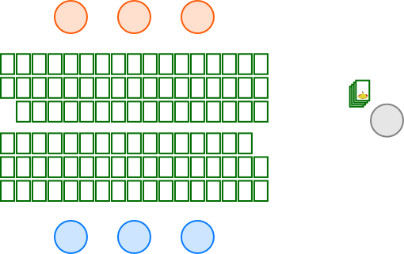
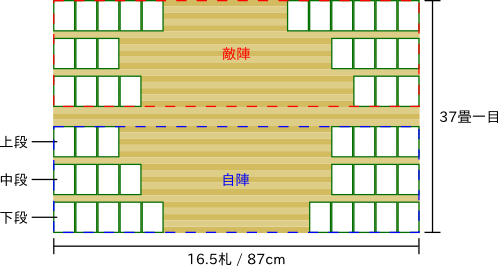

かるた

from top to bottom:
株札[2]
下の句かるた[3]
歌がるた[4]
いろはかるた[5]
Wikipedia [ja|en|de] 「かるた」 is a loanword from Portuguese (“carta”) and a term used to describe several types of Japanese card games. Compared to western type playing cards (known in Japan as 「トランプ」) the cards of かるた-type games are usually a bit thicker (image[1]). The origins of かるた lie in western playing cards, which were introduced to Japan by Portuguese traders during the mid 16th century. As a result, there are several games that fall under the category of かるた which resemple western playing cards and rules (for example insofar as cards are divided into suits). Later, the concept of かるた was merged with the matching principle of 貝合わせ, which gave rise to a new type of game with the folling basic design: - there are two sets of cards A, B - each card in set A has a matching card in set B - given some information from a card in set A, the goal is to identify the matching card from set B 歌がるた and いろはかるた are two distinct sub-groups which will be the focus of this page. Games which stem from かるた prior to the influence of 貝合わせ are listed under その他 (“others”). Image sources: [1] ouji-day.jugem.jp [2] commons.wikimedia.org [3] photozou.jp [4] photozou.jp [5] commons.wikimedia.org Note: This page will be riddled with Japanese words since ローマ字 are evil (hover over Japanese words to see transliteration).
{kind=link}
{kind=link}
{kind=link}
歌がるた

歌がるた cards
licence: CC BY-SA; author: Tarek Saier
Wikipedia [ja|en|de] Games that fall under the category 歌がるた use cards that are based on poems. Most commonly used is the 小倉百人一首, an anthology of 100 短歌. For each poem there is one 読み札 and a matching 取り札. - 読み札 usually contain a depiction of the poet, his name and the whole poem - 取り札 usually contain only the 下の句 (written in ひらがな and w/o any 濁点) There are many ways to play with 歌がるた cards. Some of those are described in more detail further down. Features that several ways of playing have in common will be explained here and referred to where applicable: - 決まり字 The first syllable that uniquely identifies a poem. There are, for example, two poems in the 百人一首 that start with 「う」 65: 「うらみわび・・・」 74: 「うかりける・・・」 but have different second syllables. Therefore 「ら」 and 「か」 respectively are 決まり字 for those poems. - 出札 The 取り札 that currently has to be identified. - 自陣 and 敵陣 Refer to the own and oponent's portion of the playing field in games where 2 parties compete.
送り札 example
licence: CC BY-SA; author: Tarek Saier
- 送り札
In games where players are assigned a set of 取り札 which they have to empty, a 送り札 is a card
being sent to the 敵陣.
送り札 occur when a player takes a card form the 敵陣 (shown in the illustration on the right) or
in case of お手つき (see below).
- お手つき
Refers to a playing mistake — usually due to misidentifying the 出札; usually resulting in a
送り札.
- 読み手
Most 歌がるた games require a designated reader to recite the poems written on the 読み札. This
person is called 読み手.
- Reading & card taking
The usual progression in most 歌がるた games is as follows:
(1) the reader randomly picks a 読み札 and recites the poem
(2) one of the players takes the matching 取り札
(–) repeat until a player has won
散らし取り

Schema 散らし取り
licence: CC BY-SA; author: Tarek Saier
Embedding of YouTube
videos done w/ JS — sorry.
videos done w/ JS — sorry.
Two groups of people playing 散らし取り
Wikipedia [ja|en|de]
| Players | arbitrary number |
|---|---|
| Cards | 100 読み札, 100 取り札 |
源平合戦

Schema 源平合戦
licence: CC BY-SA; author: Tarek Saier
Embedding of YouTube
videos done w/ JS — sorry.
videos done w/ JS — sorry.
Students playing 源平合戦
Wikipedia [ja|en|de]
| Players | 2 teams of arbitrary size |
|---|---|
| Cards | 100 読み札, 100 取り札 |
リレーかるた
Wikipedia [ja|en|de] A variation of 源平合戦 where at any given time only one player of each team is playing. A player change happens when: - 10 or 20 読み札 have been read - a card on one's team's side gets taken by the opponent
五色百人一首

Schema 五色百人一首
licence: CC BY-SA; author: Tarek Saier
Embedding of YouTube
videos done w/ JS — sorry.
videos done w/ JS — sorry.
Students playing 五色百人一首
Wikipedia [ja|en|de]
| Players | 2 |
|---|---|
| Cards | 20 読み札, 20 取り札 |
競技かるた
Schema 競技かるた
licence: CC BY-SA; author: Tarek Saier

競技かるた field (detailed)
licence: CC BY-SA; author: Tarek Saier
払いて w/o touching the 出札
licence: CC BY-SA; author: Tarek Saier
Embedding of YouTube
videos done w/ JS — sorry.
videos done w/ JS — sorry.
2015 クイーン戦 (national championship, women's finale)
Wikipedia [ja|en|de]
| Players | 2 |
|---|---|
| Cards | 100 読み札, 50 取り札 |
下の句かるた
Wikipedia [ja|en|de]
逆さまかるた
Wikipedia [ja|en|de]
坊主めくり

Schema 坊主めくり
licence: CC BY-SA; author: Tarek Saier
Embedding of YouTube
videos done w/ JS — sorry.
videos done w/ JS — sorry.
People playing 坊主めくり
Wikipedia [ja|en|de]
| Players | arbitrary number |
|---|---|
| Cards | 100 読み札 |
| Card illustration: | Effect: |
| Normal male 「普通の人」 |
Add card to personal stack |
| Monk 「坊主」 |
Loose all cards |
| Female / noble 「姫」 / 「貴族」 |
Add card to personal stack, get all cards others lost, draw another card |
青冠
Schema 青冠
licence: CC BY-SA; author: Tarek Saier
Wikipedia [ja|en|de]
| Players | 2 teams of 2 players each |
|---|---|
| Cards | 100 読み札 |
宗春かるた
Wikipedia [ja|en|de]
その他
Notes
General: - illustrations available as SVG (contact) Goodies: - ちはやふる (漫画) (アニメ) - 『百人一首』 くもん出版, 1987. ISBN 4-87576-390-5 - Karuta: Sports or Culture? (essay) - New Zealand Kyougi Karuta Association (flickr account)